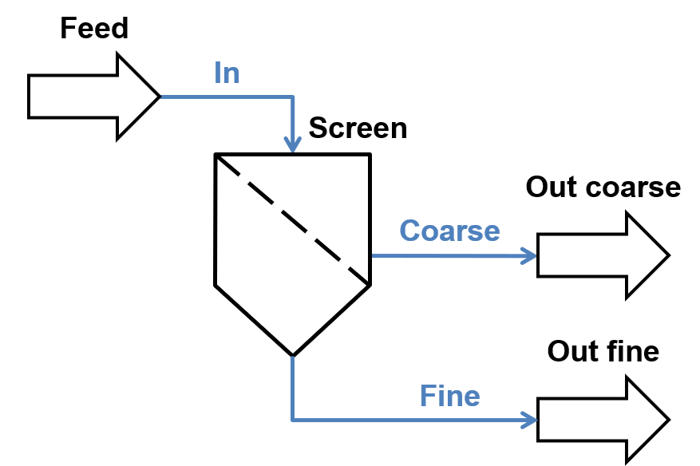
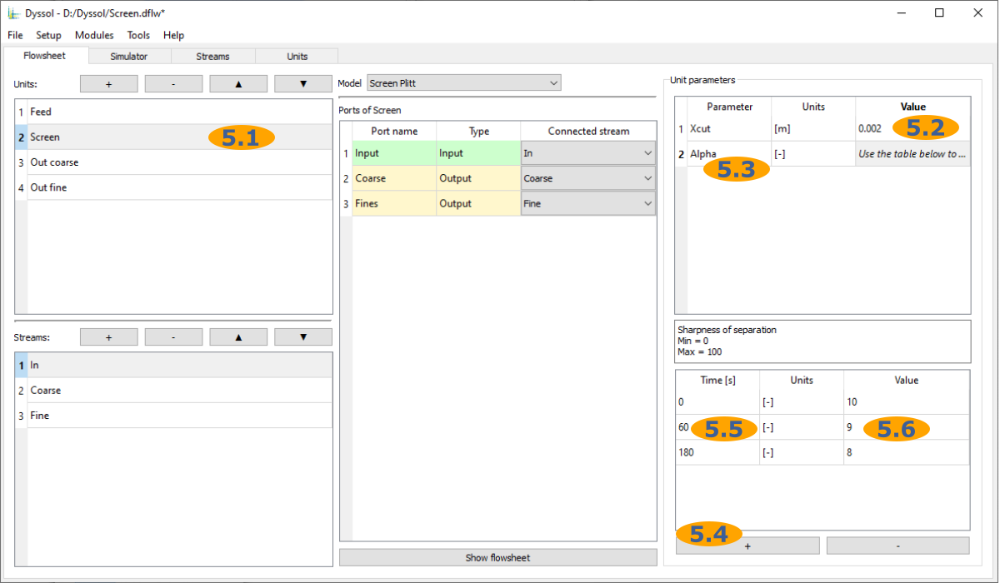
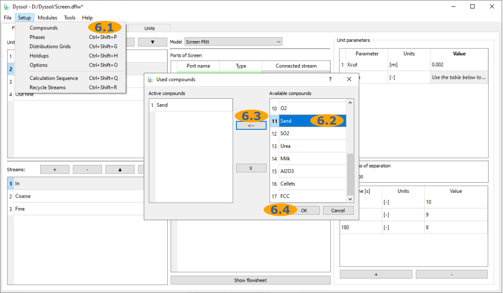
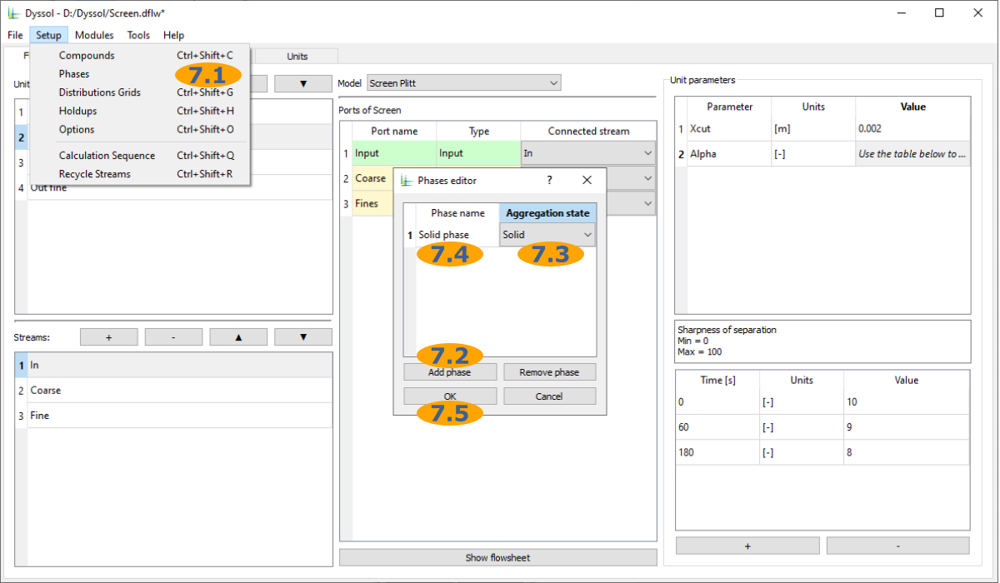
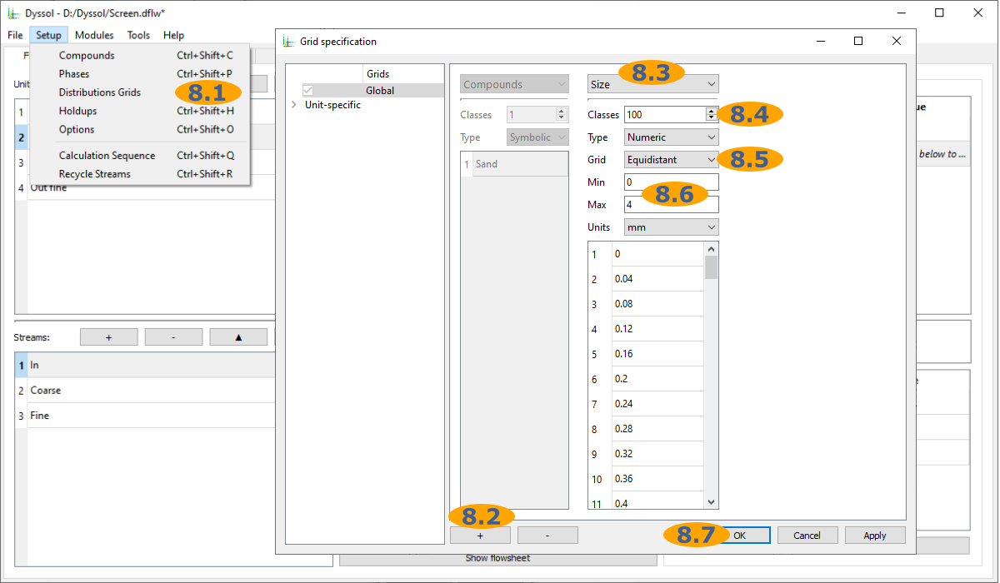
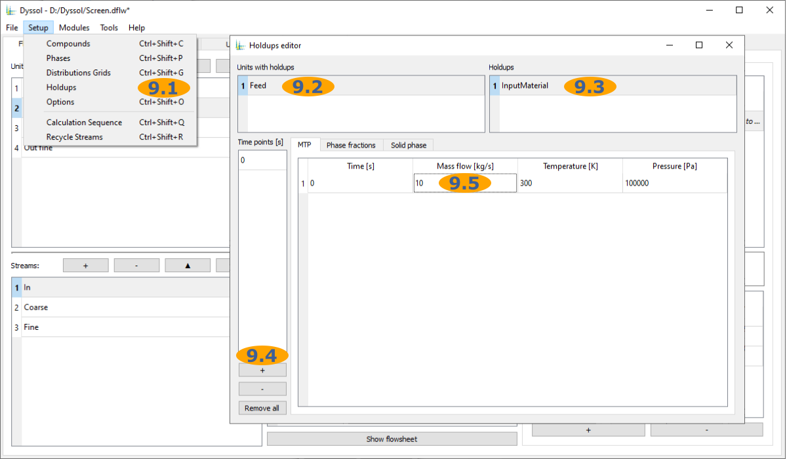
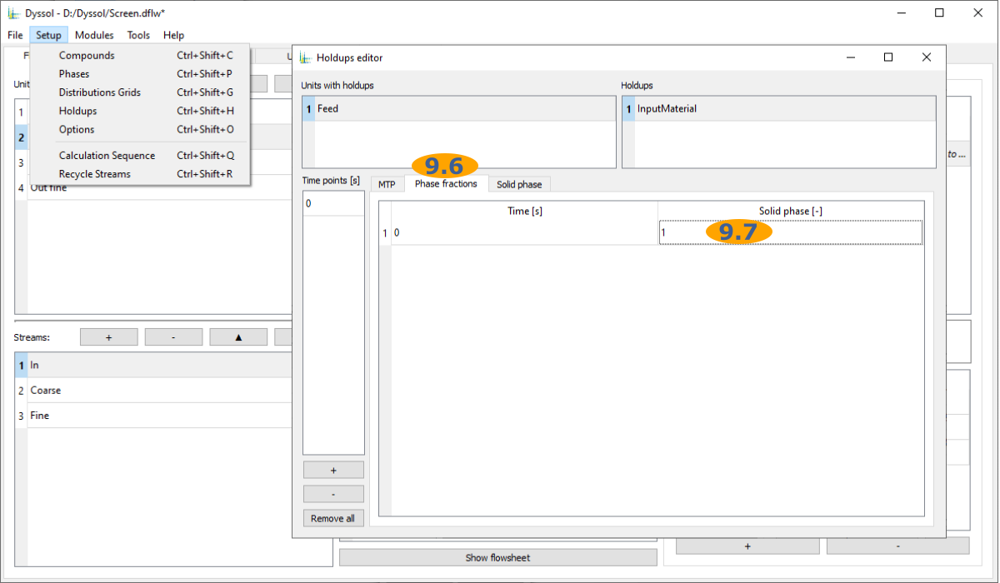
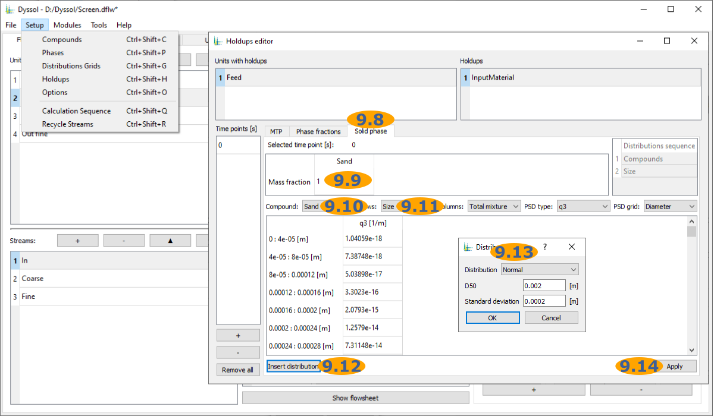
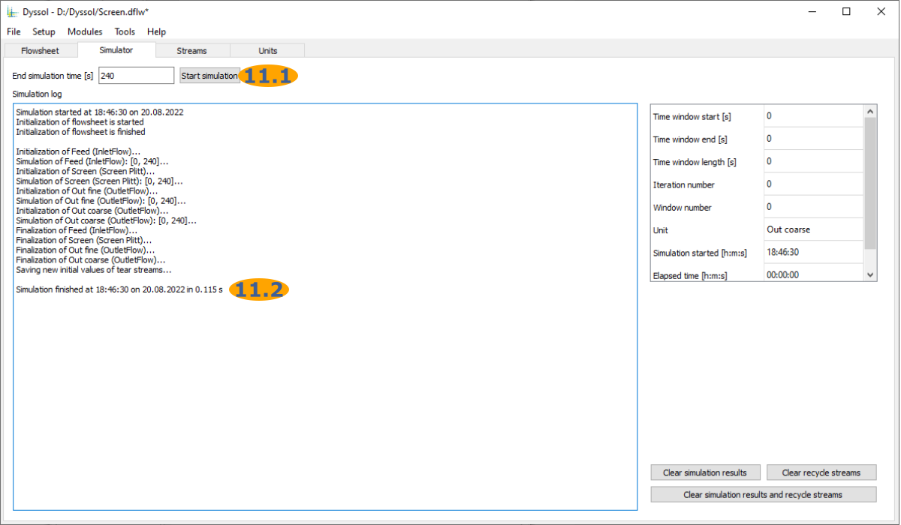

Get started
Here you will get an overview of the first steps required to use Dyssol, including installation and running first simulations.
Installation
Windows
The latest Windows installer is available on GitHub. Download it, run and follow the instructions.
After installation, you can find the following folders and files in the installation directory, by default C:\Program Files\Dyssol\:
Dyssol.exe: Main executable file of Dyssol with a graphical user interface. See also: Graphical user interfaced.
DyssolC.exe: Command line version of Dyssol. See also: Command line interface.
Materials.dmdb: Default materials database. See also: Material database.
Example flowsheets: Preconfigured flowsheet examples as
*.dflwfiles that can be run in GUI mode. See also: Files.Example scripts: Preconfigured flowsheet examples as
*.txtscripts for command line mode. Assumes Dyssol is installed inC:\Program Files\Dyssol\. See also: Files, Command line interface.Example units: Source code in C++ and project files for Visual Studio of selected units. See also: For models developers, Models API.
Example solvers: Source code in C++ and project files for Visual Studio of selected solvers. See also: For models developers, Models API.
Units: Dynamic libraries with units’ models.
Solvers: Dynamic libraries with solvers’ models.
Help: Additional documentation files as
*.pdffiles.ModelsCreatorSDK: Template Microsoft Visual Studio project for development of new models. See also: For models developers.
Licenses: Licenses of used libraries and tools.
LICENSE: Dyssol license agreement.
unins000.exe, unins000.dat: Dyssol uninstaller.
platforms, styles, *.dll, config6: Libraries required for graphical user interface.
Linux
To use Dyssol on Linux, you need to build it from source, as described in Linux.
Files
The following files are used and created by Dyssol:
*.dflw: Dyssol flowsheets
Flowsheet structure
Flowsheet settings
Simulation results
*.dmdb: Dyssol materials databases. See also: Material database.
Compounds
Properties of compounds
*.dll/*.so: Shared libraries with Dyssol models
*.txt: Script files for command line mode. See also: Command line interface.
Run your first simulation
Here you can find a detailed guide for creating and running the screen process.
A flowsheet of this example is shown below with all stream names.
{kind=link}
Follow these steps to complete the simulation and analyze the result.
Add units to the flowsheet and give them names:
1.1. Add 4 units.
1.2. Rename them by double-clicking or pressing F2. Set names to:
Feed
Screen
Out coarse
Out fine
Add streams to the flowsheet and give them names:
2.1. Add 3 streams to the flowsheet
2.2. Rename them by double-clicking or pressing F2. Set names to:
In
Coarse
Fine
Select a model for each unit on the flowsheet:
3.1. Select a unit
3.2. Select a model from the list:
Feed : InletFlow
Screen : Screen Plitt
Out coarse : OutletFlow
Out fine : OutletFlow
Connect ports of each unit to the streams:
4.1. Select a unit
4.2. Connect a stream to each port:
Feed : InletMaterial - In
Screen : Input - In, Coarse - Coarse, Fines - Fine
Out coarse : In - Coarse
Out fine : In - Fine
Setup parameters of units:
5.1. Select the Screen unit
5.2. Set Xcut parameter to 0.002 m
5.3. Select Alpha parameter
5.4. Add 2 time points
5.5. Set time values to 0, 60, 180 s
5.6. Set Alpha values to 10, 9, 8
Add compounds to the flowsheet:
6.1. Open Compounds editor
6.2. Select Sand
6.3. Add Sand to the flowsheet
6.4. Apply and close Compounds editor
Add phases to the flowsheet:
7.1. Open Phases editor
7.2. Add a new phase
7.3. Select Solid phase
7.4. Rename the phase to ‘Solid phase’
7.5. Apply and close Phases editor
Specify grids for distributed parameters of solids:
8.1. Open Grid editor
8.2. Add a new grid
8.3. Select Size distribution
8.4. Set 100 classes
8.5. Select Equidistant grid type
8.6. Set grid limits: min - 0 mm, max - 4 mm
8.7. Apply and close Grid editor
Setup feeds of inlets and holdups of units:
9.1. Open Holdups editor
9.2. Select Feed units
9.3. Select InputMaterial holdup
9.4. Add a new time point
9.5. Set Mass flow to 10 kg/s
9.6. Select Phase fractions tab
9.7. Set Solid phase fraction to 1
9.8. Select Solid phase tab
9.9. Set mass fraction of sand to 1
9.10. Select compound Sand
9.11. Select Size as a distribution in rows
9.12. Open Distributions editor
9.13. Setup Normal distribution with D50 = 0.002 m and Standard deviation = 0.0002 m and press Ok to apply
9.14. Apply and close Holdups editor
  Specify simulation time:
Run the simulation:
11.1. Run the simulation by pressing button Start simulation
11.2. Wait until the simulation is finished
Analyze the results:
{kind=link}
{kind=link}
{kind=link}
{kind=link}
{kind=link}
{kind=link}
{kind=link}
{kind=link}
{kind=link}
{kind=link}
{kind=link}
{kind=link}
{kind=link}
{kind=link}
{kind=link}